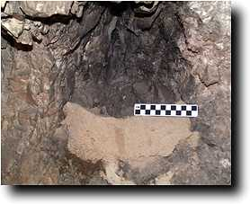
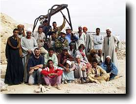
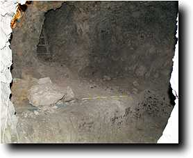
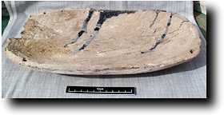
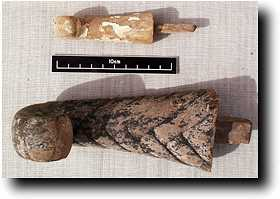
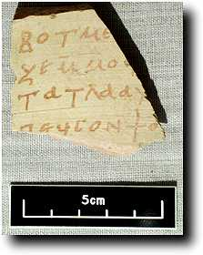
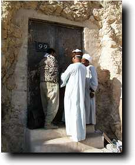

Monday 28 December
It is funny to be working on only one context again, but it does mean that there is more time to check what is going on. Today we completed what we hope will be the penultimate sweep across the burial chamber of Senneferi. Vast amounts of material continue to appear, primarily pottery and linen, with bones and the occasional other piece, such as papyrus. This photograph shows the chamber in course of excavation; the boxes are for the preliminary sorting of material which we do in situ to save time later.
Today is a bit short on outdoor photos as the weather has been very cloudy--one always tries to wait for sun for photographing objects and such.
|
Rosalind Janssen continued with her work on the textiles.
She is mixing looking at particular samples we have picked out from previous seasons with looking at the bags of linen which come out of the various levels. One particularly interesting sample was found in the burial chamber of Senneferi: it was a piece of linen patched with a different grade of material. Rosalind indicates to us that this practice is not attested in Egypt before the Coptic period, so we are on to something new here.
In recognition of the fact that we are very close to completing the excavation, we organised a special iftar (Ramadan fast-breaking breakfast) for our men:
|
Tuesday 29 December
At last--today was a really important day as we finally completed all the excavation work! The last layer of debris on the floor of the Senneferi burial chamber did not prove to be very deep, but it produced a lot of material, if not so much as its predecessors. We reckon that there must be parts of 15 or so large storage jars, as well as many small fine pottery vessels there. Other finds included another large fragment of linen with texts from the Book of the Dead on it, and Senneferi's name; there was also a rather nice false beard from a coffin. Again, cloudy weather precluded taking object photos.
After this chamber was completed, we moved to the room at the top of the steps into the burial chamber. We left this to last as it did not appear to contain much debris, which turned out to be the case. It looks as if the material in it might have been thrown there from the stairway, since very few objects were found in it. A small hole in the wall has a plastered outside, and from the black marks above it we wonder if it was an emplacement for a light or something similar.

|
By 11:30 we were finished, and very happy. The workmen are of course sorry that there will be no more work, but they are glad that we are happy, and pleased with what they have done. We finished off the morning removing stones from this shaft, and also putting the discarded pottery from this season's study work into the Shaft H.
So finally, we laid off the workmen after a very successful 4 weeks digging, and are at the conclusion of a programme of digging which saw us excavate nine shafts and the entire courtyard. This has taken the best part of 6 months since 1993, so you can see how glad we are to be finished. As usual, we took photographs of the team at the end of work.

|
Wednesday 30 December
It seemed rather quiet at the tomb today without the presence of the workmen. It does however mean that we can get on with fewer interruptions. We finished the initial recording of the material from the shafts (see how we do it). With the shafts now empty, Günter Heindl was able to make a start on Shaft I. Günter works very fast, and he hopes to be able to finish the rest of the shaft tomorrow, our last day. This is good since, it will be much more difficult when we don't have the winch. For part of the day, he was winched down the shaft metre by metre, taking measurements. I also went down the shaft to make some notes on the the rooms, and I took some photos. Here is one of the antechamber to the main burial chamber (room 2--don't forget you can see this during excavation via a Quicktime VR movie).

|
The weather was still not very sunny, but I did make a start on taking some photos. Here is one part of a container placed in the burial of Senneferi to hold food for his spirits.

And here are a couple of false beards from coffins from the Senneferi burial chamber.

|
Thursday 31 December
The last day of a season tends to be hectic. Work was a combination of finishing off loose ends from the last month and packing up. We decided to put the pottery from this year in cardboard boxes to make storing it in the tomb easier and neater. There were also a number of photographs of objects to be taken. Here are a couple.
The above items are a real enigma. They are made of soft limestone, and one bears a text mentioning the deity weret hekau, 'great of magic'. We shall have to see what they are--perhaps some form of magical object?
The other we show here is a nice Coptic ostrakon.

|
As hoped yesterday, Günter Heindl did indeed finish the work of planning the shaft. He now just has to make a few more measurements in the courtyard and the plan will be ready.
One problem which we had to solve was how to cover the remaining open shaft (H). We have gone for the temporary solution of using one of our covers from inside the tomb, cemented into place. Next season we should have more time (but alas, no money?) to do something better.
Now it was just down to Ramadan, our inspector, to seal the door. The purpose of this is to make it much easier to detect if someone has entered without permission. This is done using a lead blank and wire.
 |

 The Dig Diary 1998--Part 9
The Dig Diary 1998--Part 9